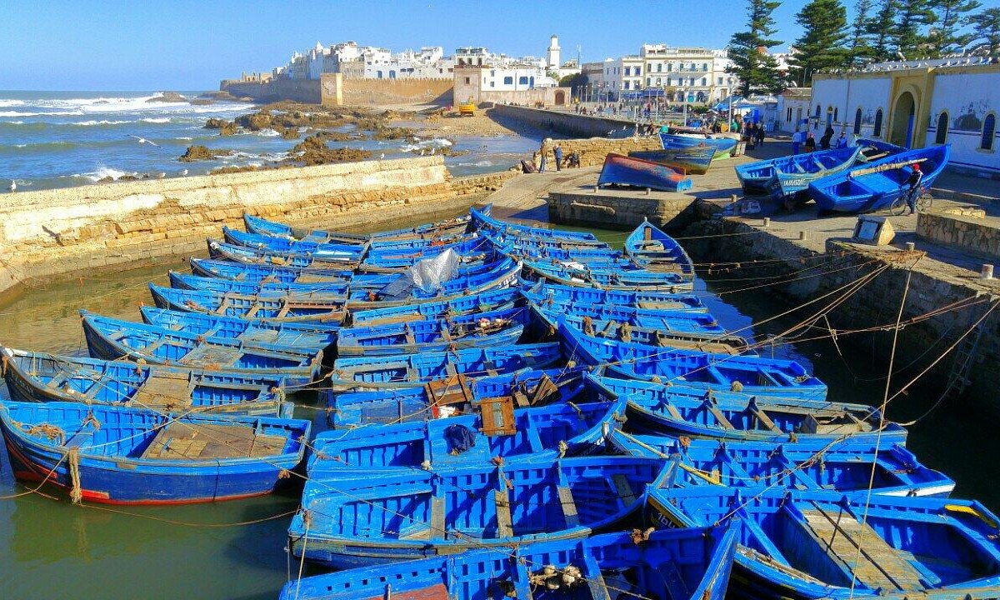

Essaouira : Entre embruns marins et bois de thuya
Publié le 28 Décembre 2025 par Asmae
L'appel de l'Océan : À peine descendue du bus, c'est l'odeur qui vous accueille en premier : un mélange puissant d'iode, de poisson grillé et de bois de thuya fraîchement sculpté. Contrairement aux autres villes impériales, Essaouira ne cherche pas à vous impressionner par sa grandeur, mais par sa douceur de vivre.
Les Remparts : Marcher sur la Skala de la Ville, c'est comme voyager dans le temps. En regardant les vagues de l'Atlantique se fracasser contre les murs de pierre ocre, on comprend pourquoi cette cité a inspiré tant d'artistes et de cinéastes. Les mouettes crient au-dessus de nos têtes, et le vent (le fameux "Alizé") vous rappelle que vous êtes bien sur la côte sauvage.
"On vient à Essaouira pour se perdre dans le bleu des bateaux du port et se retrouver dans le rythme hypnotique de la musique Gnaoua."
Mon moment préféré : Vers 16h, quand les bateaux bleus rentrent au port. C'est le chaos le plus fascinant qui soit : les pêcheurs déchargent les sardines et les congres sous l'œil attentif des chats de la médina. C'est le moment idéal pour acheter son poisson frais et le faire griller dans l'un des petits bouis-bouis à côté.
💡 Mes adresses secrètes
- Pour le goûter : Une pâtisserie marocaine chez Driss, une institution depuis des générations.
- Pour la vue : Un café au coucher du soleil sur les remparts, près des vieux canons en bronze.
- Artisanat : Cherchez les ateliers de marqueterie en thuya, le savoir-faire local unique.
← Retour aux récits